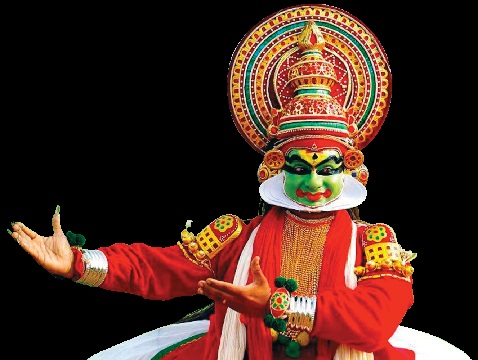
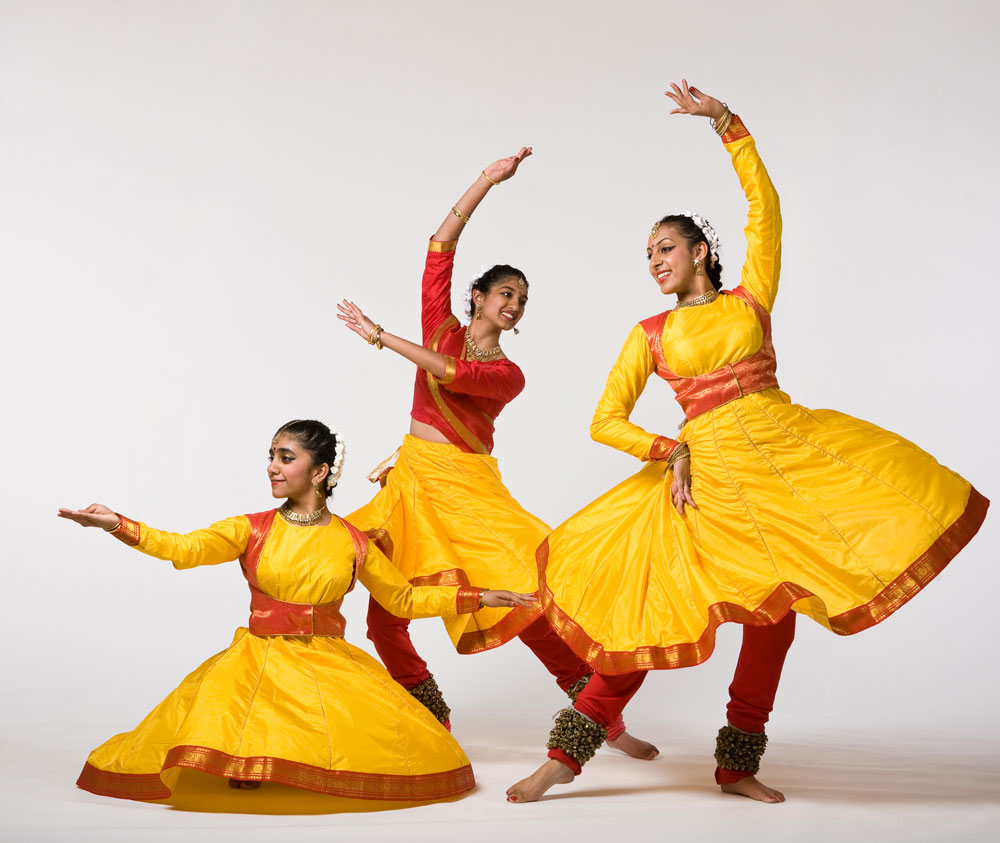
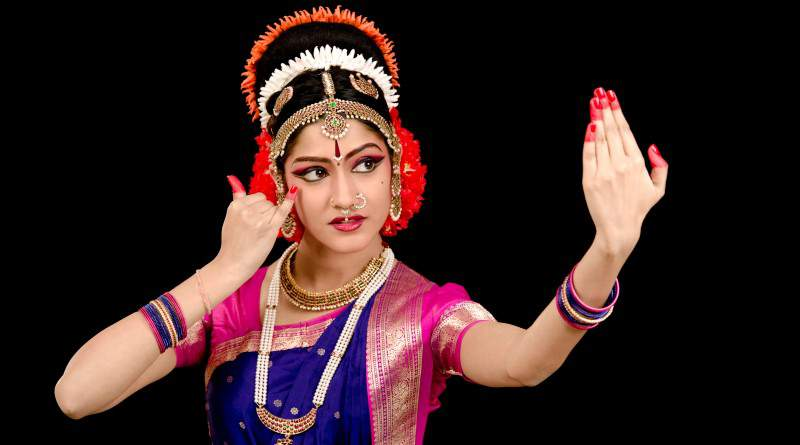
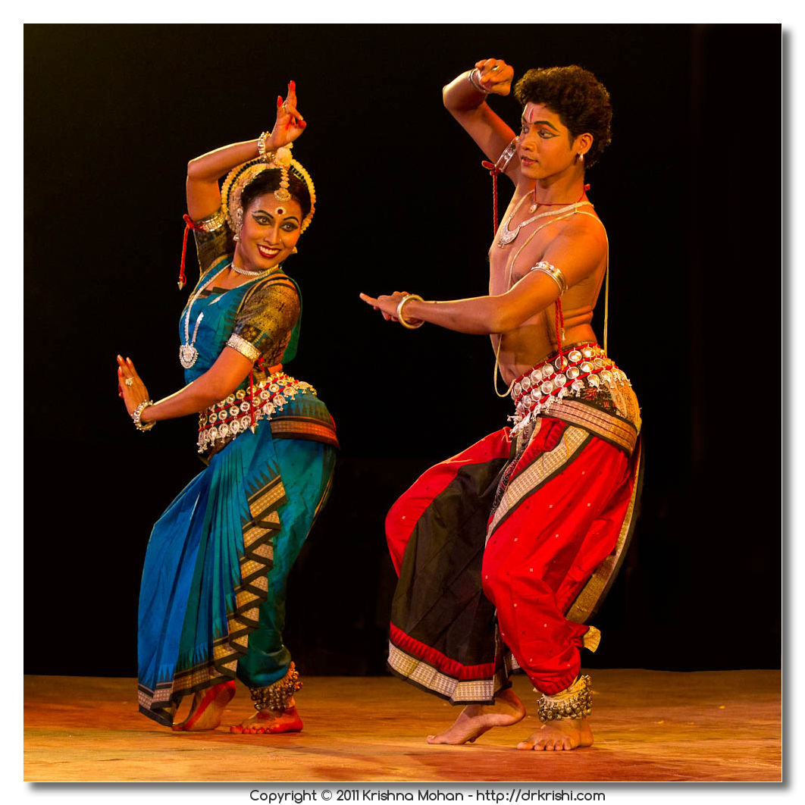
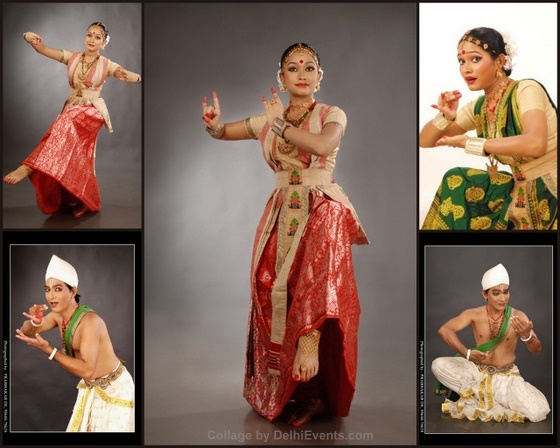
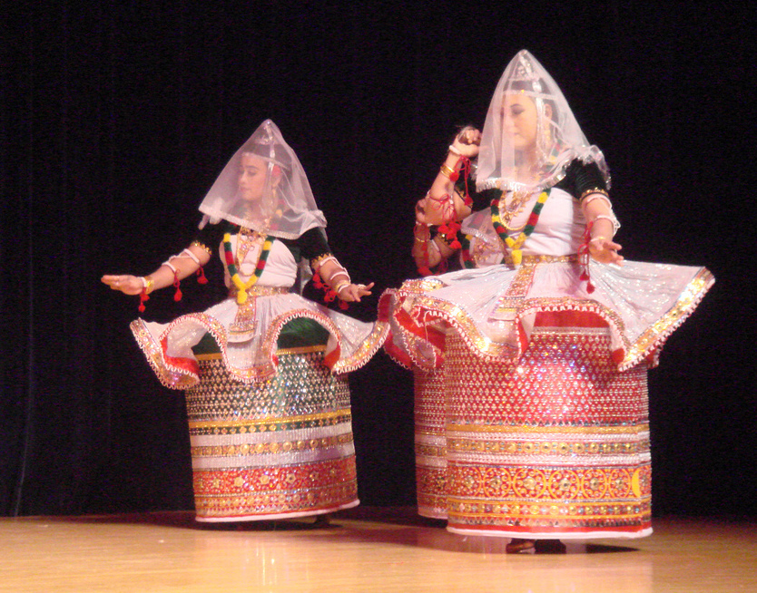
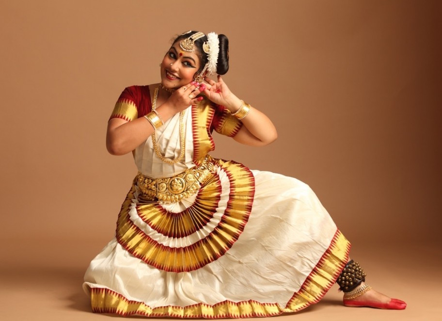

Virasat in English means 'Heritage'.Cultural heritage is the legacy of physical science artifacts and intangible attributes of a group or society that are inherited from past generations, maintained in the present and bestowed for the benefit of future generations. Cultural heritage includes tangible culture (such as buildings, monuments, landscapes, books, works of art, and artifacts), intangible culture (such as folklore, traditions, language, and knowledge), and natural heritage (including culturally significant landscapes, and biodiversity).
| LANGUAGE | TOTAL PERCENT OF SPEAKERS |
| Hindi Languages | 53.6 |
| English | 12.18 |
| Bengali | 8.86 |
| Telugu | 8.26 |
| Marathi | 8.18 |
| Tamil | 6.49 |
| Urdu | 5.74 |
| Kannada | 4.94 |
| Gujarati | 4.89 |
| Odia | 3.56 |
| RELIGION | TOTAL PERCENT OF FOLLOWERS |
| Hinduism | 79.80 |
| Islam | 14.23 |
| Christianity | 2.30 |
| Sikkism | 1.72 |
| Budhhism | 0.70 |
| Jainism | 0.37 |
BHARATNATYAM FROM TAMIL NADU

KATHAKALI FROM KERELA
KATHAK FROM NORTHERN INDIA
KUCHIPUDI FROM ANDHRA PRADESH
ODISSI FROM ODISHA
SATTRIYA FROM ASSAM
MANIPURI FROM MANIPUR
MOHINIYATTAM FROM KERELA
Click on the icon to toggle between thumbs-up and thumbs-down (like/dislike):